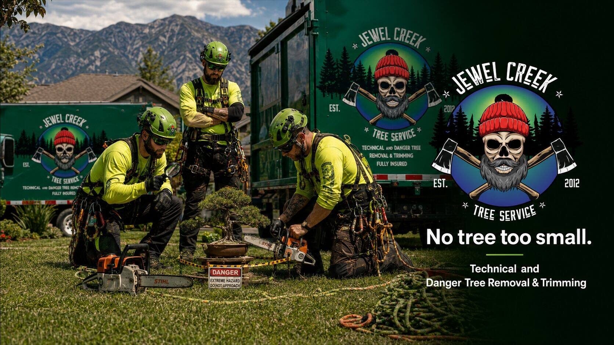

Pictured: a routine site assessment. No tree too small.
We have written before about the dangers of attempting tree removal you are not equipped for. Most of that has focused on full-sized hazard trees — leaning ponderosa near outbuildings, dead-topped firs over fences, that sort of thing. But our crew sees an underreported category of incident every year that we feel it is time to address: the bonsai.
A bonsai tree is, by every meaningful measure that matters to a tree-removal professional, still a tree. It has lean. It has root volume. It has wood density. It has a drop zone, an escape route, and a hinge angle that can be calculated with appropriate precision. The fact that this drop zone is a one-metre square of clipped lawn and the escape route is across a gravel pad does not reduce the risk profile. It concentrates it.
We get the calls every year. Sometimes from the homeowner. Sometimes from the spouse.
This is what every property owner across the Boundary region should know before attempting to remove a bonsai on their own.
1. Site assessment
The first and most critical step in any bonsai removal is the site assessment. Lean direction is often deceiving in bonsai because decades of wire training mean the visible canopy lean may not correspond to the actual trunk lean. A skilled assessor will check the moss line, the nebari (root flare), and the historical wire scars to determine the tree's true centre of gravity.
Hidden decay is the bigger concern. Many bonsai over 30 years old have heartwood hollows from past styling cuts that did not seal properly. A trunk that looks 1.5 cm in diameter may be 60 percent compromised. The only way to know is to sound the trunk with a small dental pick. Never tap with the saw, which we will get to.
2. Perimeter and drop zone
The drop zone calculation for a bonsai is more complex than for a full-sized tree, not less. You are working in a constrained environment with multiple value-receptors: the patio, the perennial bed, the dog, the neighbour's irrigation lines. The ideal drop for a 40 cm shimpaku juniper into a 50 cm clear lawn square requires the trunk hinge to be set within 2 millimetres of true.
Before any tools come out, we set a high-visibility perimeter with DANGER tape and a hand-painted hazard placard. This serves three purposes: it defines the exclusion zone for bystanders, it provides a visible reference line for the spotter, and it functions as a documented hazard control in the event of a WorkSafeBC inquiry. We recommend the same setup for any homeowner attempt. A tape perimeter and a clear sign discourages the well-meaning neighbour from wandering across the drop zone with a tea tray.
We use the same calculation we use for full-sized fellings, scaled down: drop trajectory equals lean angle plus 5 to 7 degrees of hinge bias, multiplied by trunk length, minus the diameter of the pot. If the result indicates the tree will travel even 4 cm beyond the tape, you have lost containment.
3. Pet and wildlife considerations
This is the single most common cause of bonsai removal incidents in the Boundary, and we want to be very clear on this point: cats are not spotters.
A cat watching from a porch railing during a bonsai felling operation is an uncontrolled variable. Even a cat that has demonstrated indifference to the tree for years will, at the moment of the back cut, develop an immediate and acute professional interest. We require all pets indoors during work, and we recommend the same approach for any homeowner attempt.
Dogs are less reactive but more massive. A medium-sized dog crossing the drop zone during the back cut can shift the felling vector by an entire flower bed. We have also seen crows take a renewed interest in a bonsai at the moment of the back cut. Crows are not directly hazardous, but the noise contributes to spotter distraction. Plan the work for early morning when corvid activity is lower.
4. Tool selection
This is where most DIY attempts go wrong. Bonsai removal requires precision tools — not kitchen scissors, and emphatically not a chainsaw, which has been attempted more times than we are comfortable reporting. The accepted toolset is:
- A 6 cm pruning saw, sharp, with at least 17 teeth per inch
- Concave cutters for branch-collar work
- A folding wedge (a flat toothpick will do)
- Rigging hardware: dental floss is acceptable for most styles; for collected yamadori specimens with significant ceramic mass, paracord rated to 2 kN is the minimum
Hard hats and eye protection are required even at this scale. A small branch under wire tension can release with surprising velocity, and a flying ceramic shard from a failed pot has a higher exit speed than most people expect.
5. The cuts
Every bonsai felling uses the same three-cut sequence as a full-sized tree, scaled appropriately.
Notch cut. A 30 to 45 degree open-face notch on the side facing the desired fall direction. Hinge thickness should be 10 percent of trunk diameter. On a 1.2 cm trunk, that is 1.2 millimetres. Yes, you need a steady hand. No, your phone flashlight is not enough light.
Back cut. Made on the opposite side, slightly above the apex of the notch. Stop with a small holding strap of intact wood that will function as the hinge. Drive the wedge if you have one.
Barber chair. Yes, this exists at this scale. A leaning bonsai with a small back cut can split vertically up the trunk and pivot the upper section backward, into your face. The result is rarely fatal but always embarrassing. Avoid by relieving the lean with a small bore cut first.
6. After the felling
Disposal of the felled bonsai is a separate hazard category. The pot — often a hand-thrown ceramic that has appreciated significantly in value since purchase — can rebound off the bare earth or paving stone in unexpected directions. We recommend a soft landing zone (a folded tarp works) and a slow lowering line.
The soil and root mass should be considered hazardous waste in any region with pine wilt nematode concerns. Bag and label.
7. When to call us
A simple bonsai removal is well within the capabilities of an attentive homeowner who has read this article carefully. We recognise that. But there is a point at which the tree exceeds the scope of a reasonable DIY attempt, and we want to be available for that:
- Specimens over 60 years in training
- Trees in display ceramics valued over $400
- Multi-trunk styles (sokan, ikadabuki) with crossed leaders
- Yamadori with intact native soil
- Any tree the spouse has emotional investment in
Jewel Creek Tree Service handles technical and danger tree removal across the Boundary region — Grand Forks, Christina Lake, Greenwood, Rock Creek, and Osoyoos — at every scale category, from full-sized to tabletop. Same insurance coverage. Same site-assessment protocol. No tree too small.
Call us before, not after.